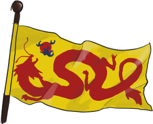
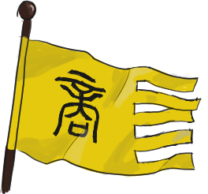
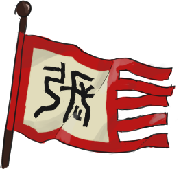
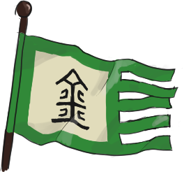
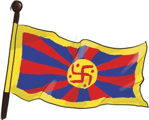

### Introduction
話說天下大勢，分久必合，合久必分。
> Once a vast united Empire, two centuries ago it fractured, as the old draconic dynasty fell to a new human royal house, for the first time in its long and expansive history.
> From the collapse of the old Yin dynasty came two great houses, and two smaller kingdoms, which have persisted until now, though instability lurks beneath the surface.
The Ancient Empire is the oldest continuous civilisation in the world, slightly older than its neighbour Parsor to the west. It traces its roots all the way back to the beginning of the first age of dragonkind, where the Mountain King Yan Shin invaded the central plains, establishing the first dynasty of Yan.
The empire underwent dynastic cycle after dynastic cycle, uniting and dividing, until the present day.
On the western edge of the empire, in the mountains, is a region called the "Spirit Abyss", cutting off east and west. No magic works here, even dragons find it difficult and tiring to fly through its skies, and so connections have always been tentative. The east's daoist cultivation and philosophy has not progressed to the west, nor have Rivian's churches come seeking for converts here.
Two trade routes are maintained, one through the endless sea to the south, passing by Parsor, and the other through the northern steppes. Though, due to both the abyss and the unpredictable weather, large-scale trade has always been impossible.


## 【商】The Great Shang
*Asyrian, Yan*, 燕族
*Population: 126 million; Currency: Silver bullion*
The Shang sit at the centrepoint of this Ancient Empire, controlling the central and northern plains, ruling from their dragon-throne in Changguan. The Shang were founded by the human family of Wu 武, who 160 years ago overthrew the old Yin 銀 dragon dynasty in a bloody civil war.
The current emperor, Dzulong 祖龍 (born Wu Yisyian 武義獻), has ruled for nearly forty years, and is growing in age. His only son is sly and cunning, but immersed in Daoist cultivation and had minimal care for the Empire. Discontent from within and without threaten to unseat the Shang from their throne, and this great power is edging slowly into freefall.

## 【張】The Great Jang
*Population: 17 million*
Zhang are the last remnant of the old dragon clans. During the civil war, the noble draconic clans faced a genocide, and could not but put aside their differences, and band together to fight against the usurpers, uniting under the House of Jang, sister house to the Yin.
In the end though, they lost.
For however powerful a dragon is, in the face of eastern magic they were no less mortal than a man. With overwhelming force the Shang drove the Jang into the mountains, into the impenetrable fortress of Damak Valley, into the harsh deserts of the Western Protectorate, but unable to push further. The Jang built up their forces, an army that could control both land and sky, but ultimately could never attack back, never having the opportunity.
After so long, even though neither side officially recognises the others' dynastic line, a peace more or less has formed between them, and generally the borders are open to civilian travel. Jang have given up the imperial throne in all but name, focusing their attentions elsewhere.
The current emperor is Syindai 欣代 (born Jang Yujing 張宇靖) of the gold dragon clan of Jang, and he rules alongside his prime minister, the Lord of Damak Ma Syianhai 太川公 馬仙亥.

### 【金】The Jin Kingdom
*Population: 1 million*
Being a peninsula, with their exit a mountain range, the Jin were in a strategically excellent position. When the civil war broke out, the Yin-allied Jilin-Jin 吉林金 clan held off the Shang advance, and continued on as an independent kingdom ever since. A century later, the Shang aligned Siauw-Jin 蕭金 clan usurped the throne from the Jilin, though have still remained an independent kingdom on the periphery.
### 【南雲】The Nanyun Kingdom
*Population: 3 million*
Nanyun was always semi-independent of the capital, being situated in a river valley surrounded by mountains, and so during the civil war, when the House of Loi 雷 expelled all of the Shang-friendly officials, the Shang could not retaliate, or re-incorporate the region back into the realm.
As for the Jang, they have never tried. The Loi were appointed by the Yin, and thus loyal to the current Jang dynasty. The latter are content to let Nanyun operate on its own for now.
## The Golden Khaganate
*Kagul or Ulan* 【中】金汗國、烏蘭汗國
*Population: 15 million*
The steppe people live on the southern border of Marakar, in the great steppelands that connect east and west. Being the most accessible routes, even despite the Spirit Abyss, horse nomads have roamed the area for millennia.
These horse nomads some time ago banded together, forming the Golden Khaganate, which suddenly attacked east, west, and south for some unknown reason, perhaps to find less hostile ground.
Barrelling their way through the independent northern states, they have conquered much of what was once the Ancient Empire's northern marches, but their lands are still harsh and arid, not suited to life. Thus the great Khagan has been eyeing up its more fertile southern neighbour for some time...
Their landmass-spanning empire is not just a bad thing, however, creating a stable unified power controlling the entire northern trade route, allowing Asyrian silks and porcelain to cross into Dacrame, and glass and machinery to pass back, creating a small yet lucrative commerical empire.

## Luzan
*Luzanese* 【中】盧藏
*Population: 200 thousand*
The Kingdom of Luzan is deep within the western mountain, eking out a living on the harsh plateau west of the World Spring.
They live in the middle of the spirit abyss, in a pocket that still allows magic to arise -- that is, magic of the Buddhist sect.
For the Buddhists have controlled Luzan and its surrounding areas for over a hundred thousand years, maintaining one of the most stable magical-religious powers in the entire eastern continent, and in this era of stagnation, one of the most powerful.
Whilst a worldly king rules Luzan, the real centre of power lies with the Bodhisattva, standing at the peak of magical cultivation, and his four Arhats, who rule the four directions.
## Taihou
*Taihou* 【中】太後
*Population: 100 thousand combined.*
The Taihou are split into two tribes, the northern Daikyoku Taihou, and the southern Mon Taihou, one of which is more inland, and one of which is more oceangoing.
They are generally very isolationist, and thus seldom seen in inner lands.
The Taihou were one of the major people groups who had been migrating eastwards into the sea of shattered stars for centuries, making up a good portion of their number, though these people see no loyalty to their ancestral tribe.
### Daikyoku Taihou
【中】大曲太後
The slightly more populous tribe, the Daikyoku are mountain people, tending to terraced plantations in richly forested mountain valleys, cultivating the land, with the only seafaring done in the Sea of Lesser Stars.
They are famed, even more than their southern neighbours, for their warrior culture, and sometimes Taihou mercenaries and guards can be seen inland, mostly from the Daikyoku.
### Southern Mon Taihou
【中】南孟太後
The less populous tribe, the Mon are water people, building fishing villages and small communities across scattered islands.
Mon are the main people that travel often further into the sea, and so are generally known for navigation across open water.
#### Zian
*Zian Luzanese* 【中】淄安
Zian is a puppet of its northern neighbour Luzan in all but name, being ruled by the Arhat of the South, one of the four Arhats of the Buddhist house. Though it is much smaller, due to its position on a relatively fertile river valley Zian has a similar population to Luzan, though more of their territory is in the harshest parts of the Spirit Abyss, where nearly all magic loses effect.
#### Southern Tribes
*Demonym Varies* 【中】南蠻部落
The southern tribes are a series of kingdoms and loose tribal confederations that inhabit the jungles in the southwest. Being half on the Spirit Abyss, they have always been magically poor, and thus do not attract the attention or care of the greater powers to their north.
The tribal kingdoms, from largest to smallest, are Mung Raan〔莽燃〕, Ngan Rung〔囊榮〕, Li Sur〔麗孫爾〕, and Lu〔旅〕.
#### Kashkat'ai
*Kashkat* 【中】卡什喀泰、卡什喀特艾
Kashkat'ai is a small kingdom on the coast, being a tribe that adopted a government model of the central plains, forming itself into a kingdom. It has historically paid tribute to the ancient empire in the Central Plains, but after the civil war and the collapse of the Yin, they cut all tributary ties.
#### Fulan
*Yan* 【中】福蘭
Fulan was once a colony of the Shan dynasty, having slowly broken away over the past three thousand years. It now sits at the tip of a peninsula, carrying out commerce between the various ports along the sea.
#### Lurkhas Clique
*Lurkhai* 【中】羅厦
The Lurkhas clique was once part of the Empire, but broke away a long time ago and never rejoined. It is ruled by the Lyu 呂 dragon clan, though their grasp is tentative, as they have lost over half their territory to the Khaganate, and are looking at being wiped off the map.
#### Gorchin and Chusoro
【中】郭秦、朝鮮若/楚鲜若
Gorchin and Chusoro are two small isolated states in and around the northern mountain ranges. Similar to Lurkhas, they are extremely weak, and have each lost over half their territory to the Khaganate, and almost destined to lose the rest in the next few years.
#### Jotunshir
【中】由敦使爾
Jotunshir is a city state in the western realms, sandwiched between the Jang controlled Western Protectorate, the Shang commandery of Shinkiang, and the various satropies of the great Khagan. It barely manages to keep independence by playing off the three powers against each other.